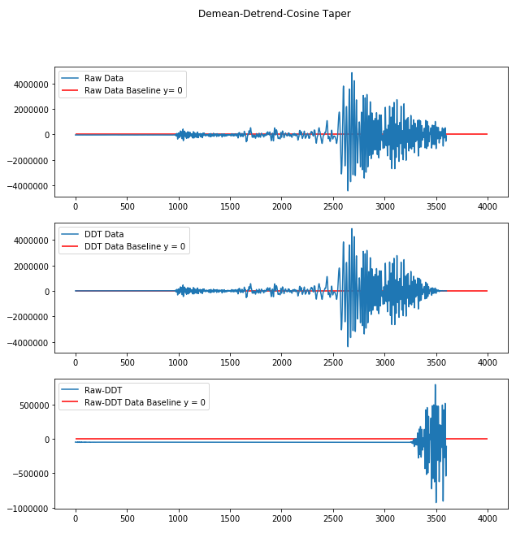

pycheron.psd.noise.deadChannel¶
-
DDT(tr, detrend=True, demean=True, taper=0.1)[source]¶ Demeans, detrends, and applies a cosine taper to a trace object
Parameters: - tr (obspy.core.trace.Trace) – obspy trace object
- detrend (bool) – boolean specifying whether to detrend
- demean (bool) – boolean specifying whether to demean
- taper (float) – proportion (percentage) of the signal to be tapered at each end
Returns: trace object that has been demeaned, detrended, and tapered
Return type: obspy.core.trace.Trace
Example
#import function from psd.noise.deadChannel import DDT # Initialize IRIS client client = Client("IRIS") #Grab out P-wave onset for a big earthquake starttime = UTCDateTime("2010-02-27T06:30:00.000") endtime = UTCDateTime("2010-02-27T07:30:00.000") # Grab data from IRIS web client server with specified starttime/endtime and SNCL st = client.get_waveforms("IU","ANMO","00","BHZ", starttime,endtime) # Get trace from stream tr = st[0] # Copy stream so doesn't permanently change trace object tr1 = tr.copy() # Detrend, demean, taper trace trDDT = DDT(tr1, True, True, 0.1)
Plotting
# Compare detrended, demeaned, and tapered trace to original data fig = plt.figure(figsize=(10,10)) fig.suptitle('Demean-Detrend-Cosine Taper') ax1 = fig.add_subplot(311) ax1.plot(tr.times(), tr.data, label='Raw Data') ax1.hlines(y=0,xmin=np.min(tr.times()), xmax=4000, colors='r', linestyles='solid', label='Raw Data Baseline y= 0') ax1.legend(loc = 2) ax2 = fig.add_subplot(312) ax2.plot(tr.times(), trDDT, label = 'DDT Data') ax2.hlines(y=0,xmin=np.min(tr.times()), xmax=4000, colors='r', linestyles='solid', label='DDT Data Baseline y = 0') ax2.legend(loc = 2) ax3 = fig.add_subplot(313) ax3.plot(tr.times(), tr.data-trDDT, label = 'Raw-DDT') ax3.hlines(y=0,xmin=np.min(tr.times()), xmax=4000, colors='r', linestyles='solid', label='Raw-DDT Data Baseline y = 0') ax3.legend(loc = 2)
-
isDC(tr, detrend=False, demean=True, taper=0)[source]¶ Tests trace to see whether it is a dead channel, e.g., flatlined (std is zero)
Parameters: - tr (obspy.core.trace.Trace) – trace object
- detrend (bool) – boolean specifying whether to detrend
- demean (bool) – boolean specifying whether to demean
- taper (float) – proportion (percentage) of the signal to be tapered at each end
Returns: True or False as to whether the trace is Dead Channel.
Return type: bool
Example
#import function from pycheron.psd.noise.deadChannel import isDC #test data with multiple traces data = 'test/test_data/6e_sp06_Eall.397679.tar.mseed' #reading in stream st = obspy.read(data) #grabbing trace tr = st[0] #test if dead channel isDC(tr) >>> False